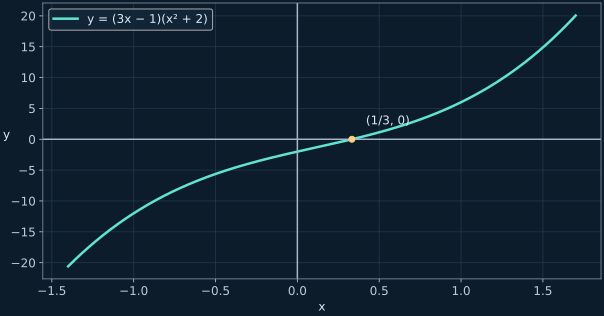

Формулы Виета, параметр и многочлены
От суммы корней до схемы Горнера: объяснения и разбор примеров занятия.
← Все конспектыИсточники и границы записи
Разбор по слайдам и записям на доске в видео за 27 октября (1 ч 59 мин). Приложенный SRT с этой датой относится к другому видео. Начало записи продолжает уже изученную параболу; устные фрагменты без читаемой записи не восстанавливались по догадке.
1. Число корней и параметр
У квадратного трёхчлена сначала проверяем, что коэффициент при x² не равен нулю. Два различных действительных корня требуют Δ>0; ровно один — Δ=0. Если старший коэффициент стал нулём, решаем линейное уравнение отдельно.
Два корня: 2x²−4x+c
Один корень: x²+bx+3
Почему x²+bx−4 не подходит
Всегда два различных действительных корня: подходящего b нет.
2. Сведение к квадратному уравнению
Если встречаются x⁴ и x², заменяем x² на t. Если встречаются x² и |x|, берём t=|x|. В обоих случаях t≥0: отрицательные корни нового уравнения отбрасываем.
Биквадратное уравнение
Уравнение с модулем
3. Сумма и произведение корней
Формулы Виета позволяют узнать сумму и произведение корней, не вычисляя сами корни. Сначала убеждаемся, что действительные корни существуют.
Пример 3x²+12x−18=0
Произведение отрицательно, значит корни разных знаков. Отрицательная сумма означает, что отрицательный корень больше по модулю.
4. Выражения через корни без извлечения радикалов
В уравнении 2x²−4x−15=0 имеем S=2 и P=−15/2. Раскрываем квадрат суммы и выражаем нужное через S и P.
Последняя формула требует P≠0: иначе один из корней нулевой и обратная величина не существует.
5. Параметр и дополнительное условие
Два различных корня и x₁²+x₂²=4(x₁+x₂)
При m=0 получаем корни 0 и 4: они различны и 0²+4²=4·(0+4).
6. Оба корня меньше заданного числа
Оба корня меньше 2
Сдвигаем корни: y₁=x₁−2, y₂=x₂−2. Два различных отрицательных y требуют одновременно Δ>0, y₁+y₂<0 и y₁y₂>0.
Берём пересечение всех трёх условий, а не только условие на дискриминант.
7. Разложение многочленов
Начинаем с общего множителя. Затем используем разность квадратов, разность кубов или группировку. Степень многочлена — наибольшая степень x с ненулевым коэффициентом.
Общий множитель и разность квадратов
Корни: −2, 0, 2; корень 0 имеет кратность 3.
Разность кубов
В действительных числах остаются корни 0 и 5.
Группировка
8. Теорема Безу и схема Горнера
Если W(r)=0, многочлен делится на x−r без остатка. В схеме Горнера обязательно записываем нулевые коэффициенты пропущенных степеней. Кандидат на рациональный корень p/q: p делит свободный член, q делит старший коэффициент; это только кандидаты.
2x³−x²−12=0
9. Неравенство после разложения
Положительный множитель можно убрать

Теперь попробуй самостоятельно
Дополнительные задачи находятся только во вкладке «Тренировка»: по 10 на каждый тип, с раскрываемыми ответами и разбором.
Открыть тренировку →